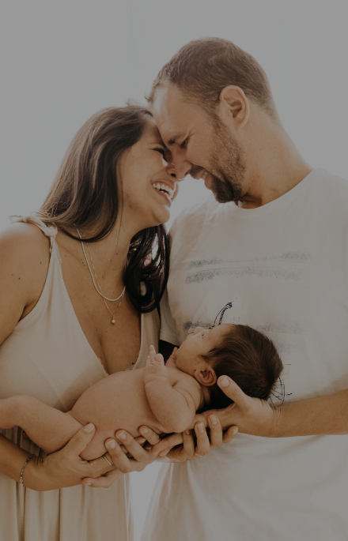

충남대학교병원로고
비쥬얼
-
Beyond the region, be world legend! 지역의료를 넘어,
세계의료의 역사를 쓰는 병원
-
Beyond the region, be world legend! 최고의 바이오헬스케어
산업화를 선도하는세계적 병원
-
Beyond the region, be world legend! 최상의 환자중심 진료를
제공하는 국민병원
SERVICE
고객님들의 편의를 우선으로생각하는 충남대학교 병원
-
더보기 add_circle
-
교육
건강한 임신과 출산을 돕는
산모 교육 프로그램정진옥 교수는 “최신 치료법인 경피적대동맥판막치환술은 가슴을 열지 않고 새로운 판막을 삽입할 수 있기 때문에 개흉술보다 합병증 발생 가능성이 낮고, 일상생활로의 회복이 빠른 장점을 가지고 있다”라며 “ 80세 이상의 고령 환자에서 정부의 보험료 지원이 상향 조정되어 많은 환자분들이 도움을 받고 있다”라고 말했다.
-
공모전
개원 50주년 공모전
결과 발표정진옥 교수는 “최신 치료법인 경피적대동맥판막치환술은 가슴을 열지 않고 새로운 판막을 삽입할 수 있기 때문에 개흉술보다 합병증 발생 가능성이 낮고, 일상생활로의 회복이 빠른 장점을 가지고 있다”라며 “ 80세 이상의 고령 환자에서 정부의 보험료 지원이 상향 조정되어 많은 환자분들이 도움을 받고 있다”라고 말했다.
-
치매센터
대전광역치매센터와 함께
하는 치매극복 희망메세지정진옥 교수는 “최신 치료법인 경피적대동맥판막치환술은 가슴을 열지 않고 새로운 판막을 삽입할 수 있기 때문에 개흉술보다 합병증 발생 가능성이 낮고, 일상생활로의 회복이 빠른 장점을 가지고 있다”라며 “ 80세 이상의 고령 환자에서 정부의 보험료 지원이 상향 조정되어 많은 환자분들이 도움을 받고 있다”라고 말했다.
-
-
더보기 add_circle
-
 센터
센터의료데이터 안심활용센터
구축 지원사업 선정보건복지부 주관 ‘2022년 의료데이터 안심활용센터 구축 지원사업’에 중부권 지역에서 유일하게 수행기관으로 선정됐다.
-
 협약식
협약식한국투명성기구 반부패
청렴 업무협약 체결이번 협약을 통해 상호 유기적인 반부패 협조체계를 구축하고, 경영 투명성과 사회적 가치 창출 및 청렴문화 확산과 상호 협력 등을 추진해 나갈 계획이다.
-
 대학교
대학교CNUH 대학생 서포터즈
학습멘토와 다함께 홈런공공보건의료사업단(단장 나기량/신장내과 교수)은 9월 20일(화) 대전 한화생명이글스파크에서 CNUH 대학생 학습멘토들과 함께하는 ‘다함께 홈런’ 야구관람 문화체험을 가졌다.
-